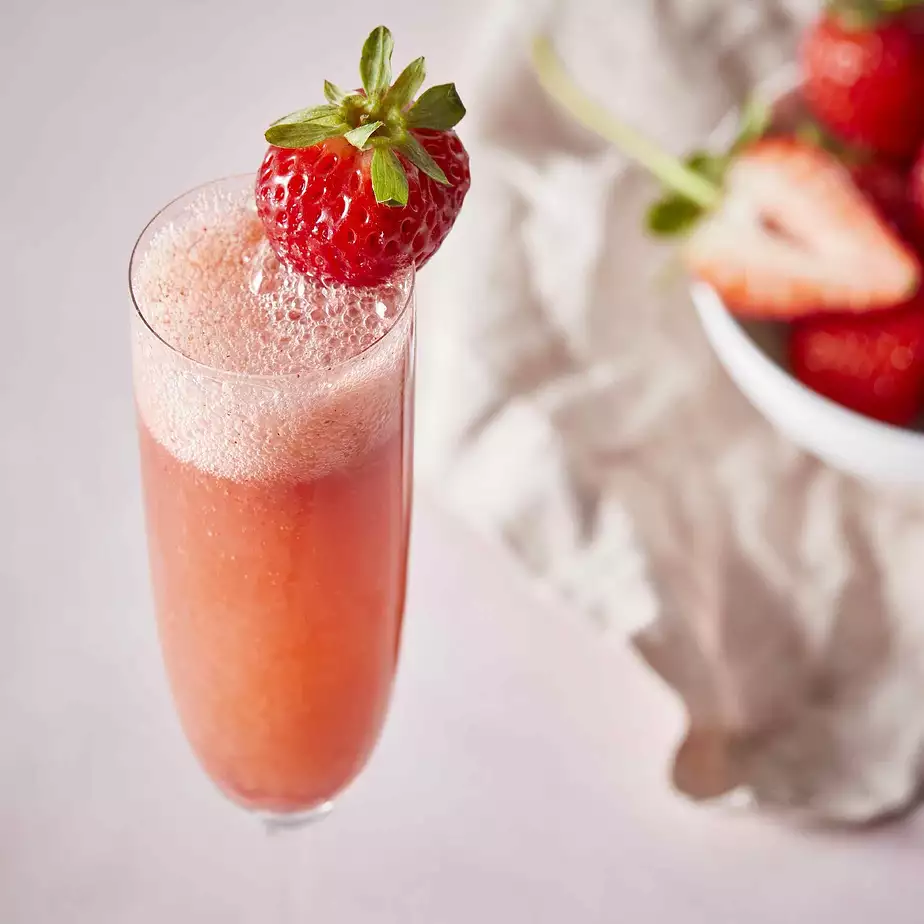

Strawberry Bellini

Description
A nice drink for Mother's Day, a brunch, or a shower.
Ingredients:
-
3 cups strawberries, hulled and sliced
-
¼ cup confectioners' sugar
-
1 tablespoon brandy
-
1 ½ cups chilled sparkling wine
-
3 large strawberries
Steps:
-
Blend 3 cups strawberries, confectioners' sugar, and brandy together in a blender until smooth. Chill in refrigerator for 10 minutes.
-
Divide the strawberry mixture among 3 champagne flutes; top each with about 1/2 cup sparkling wine; stir. Garnish each glass with 1 strawberry.